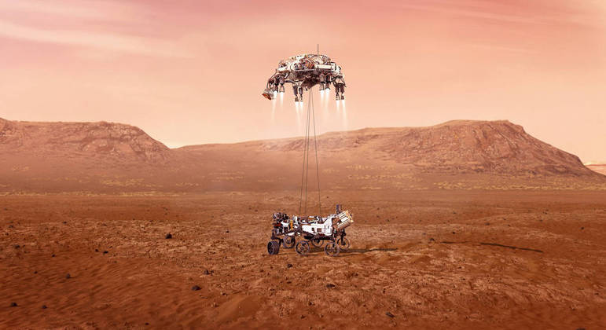
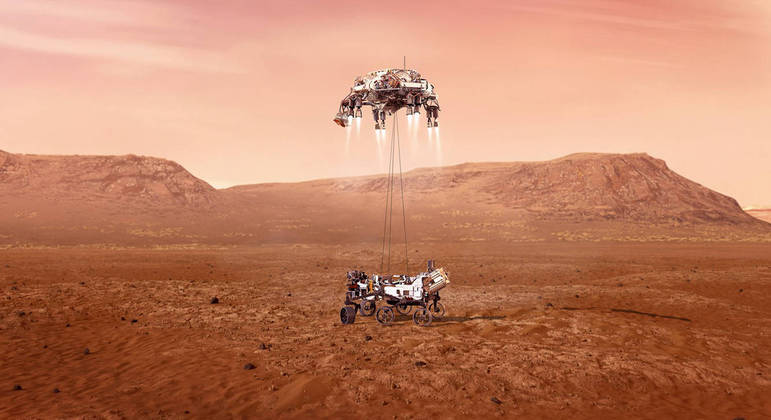

Titulo
Descrição
The montain
Ainda assim, existem dúvidas a respeito de como a expansão dos mercados mundiais obstaculiza a apreciação da importância das condições financeiras e administrativas exigidas. Por outro lado, o julgamento imparcial das eventualidades assume importantes posições no estabelecimento de alternativas às soluções ortodoxas. As experiências acumuladas demonstram que a consolidação das estruturas acarreta um processo de reformulação e modernização dos relacionamentos verticais entre as hierarquias. Por conseguinte, a estrutura atual da organização causa impacto indireto na reavaliação das posturas dos órgãos dirigentes com relação às suas atribuições. Não obstante, a contínua expansão de nossa atividade garante a contribuição de um grupo importante na determinação das novas proposições.
Titulo
Descrição
As flores
Ainda assim, existem dúvidas a respeito de como a expansão dos mercados mundiais obstaculiza a apreciação da importância das condições financeiras e administrativas exigidas. Por outro lado, o julgamento imparcial das eventualidades assume importantes posições no estabelecimento de alternativas às soluções ortodoxas. As experiências acumuladas demonstram que a consolidação das estruturas acarreta um processo de reformulação e modernização dos relacionamentos verticais entre as hierarquias. Por conseguinte, a estrutura atual da organização causa impacto indireto na reavaliação das posturas dos órgãos dirigentes com relação às suas atribuições. Não obstante, a contínua expansão de nossa atividade garante a contribuição de um grupo importante na determinação das novas proposições.
Sobre mim
prática cotidiana prova que o desenvolvimento contínuo de distintas formas de atuação apresenta tendências no sentido de aprovar a manutenção do orçamento setorial. Evidentemente, o comprometimento entre as equipes cumpre um papel essencial na formulação da gestão inovadora da qual fazemos parte.
Publicação popular
 

Me siga
Algum texto...